正交 | Orthogonality
内积 | Inner Product
设向量 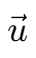 与 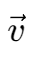 同为 n 维向量，将其看作 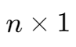 的矩阵。
则 与 的内积,,即为 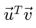。
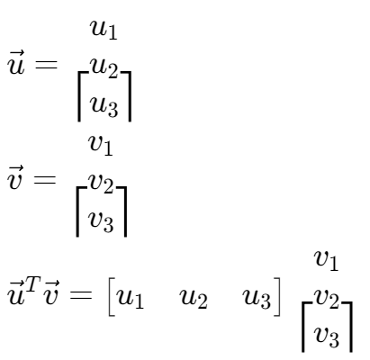
一个小例子
范数 / 长度 | Norm / Length
对于一个 的矩阵 v，其范数
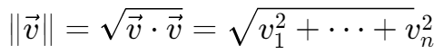
- 长度为 1 的向量为单位向量,,
- 将一个向量标准化,,后即可转化为同方向上的单位向量
向量间距离 | Distance
对于向量 与 ，其相互距离
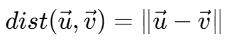
向量正交 | Orthogonal Vectors
对于向量 与 ，若其内积为零，则其互相正交。
毕达哥拉斯定理 | The Pythogorean Theorem
对于两个正交向量，有
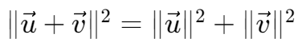
正交补 | Orthogonal Complements
对于一个向量 z，有子空间 W，其所有元素均与 z 正交，则 W 为 z 的正交补。
投影 | Projection
要求向量 y 在 u 方向上的投影，有公式
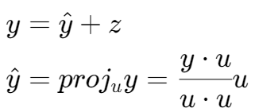

向量在空间上的投影
设有一个向量 y 和一个空间 W，u1 和 u2 为 W 上的一组正交基，则 y 在 W 上的投影为：
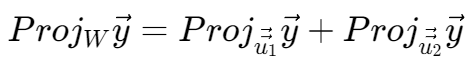
斯密特正交化 | Gram-Schmidt Process
给定一组在子空间 W 下的基 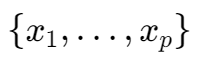，有
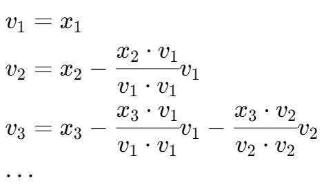
则计算所得  即为 W 下的一组正交基。
即为 W 下的一组正交基。
最小二乘 | Least-Squares
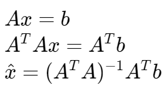